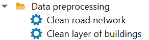
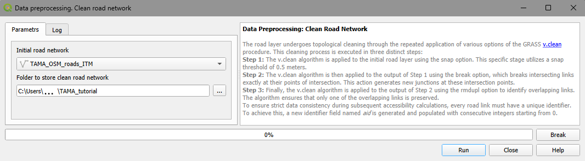
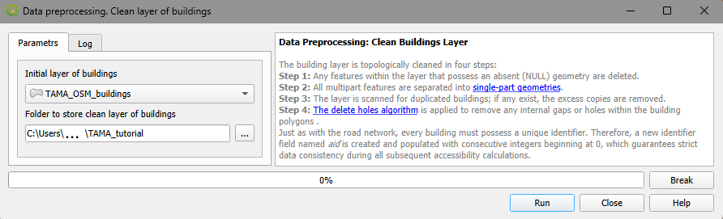

4. Data preprocessing
Accessibility computations rely on iterative calculations of the fastest car or transit routes between buildings. These operations require topologically clean layers of roads and building. The user supplies the source layers of roads and buildings, which are then validated and, if necessary, corrected using the Data preprocessing algorithms (Figure 1).

Figure 1. Data processing section of the Accessibility Calculator menu
While topological errors may be of many different kinds, the most common issues in road networks are a missing junction where two links visually intersect, or links failing to connect properly at an existing junction. For building foundation layers, typical topological errors include buildings represented as multipart polygons, building polygons containing holes, or duplicate building entries. If the road or building layers are already topologically correct, the cleaning procedures will leave them completely unaltered. Once cleaned, the processed road and building layers are automatically added to your QGIS project.
Note
We highly recommend opening your road and building layers in the QGIS project prior to cleaning to visually verify they are the correct datasets for your analysis. Occasionally, the road layer may not accurately reflect the physical road network. We suggest cross-referencing the road layer with QGIS basemaps (e.g., Google Road maps), paying close attention to complex interchanges. You may need to manually add missing links or delete non-existent ones.
This section outlines the process of topological cleaning employed in the AC plugin. Our examples below utilize the gis_osm_roads_free OSM TAMA road layer, and the gis_osm_buildings_a_free OSM buildings layer for TAMA, both downloaded in August 2024.
Note
Topological cleaning involves extensive calculations of link lengths and distances between nodes. These operations perform significantly faster if the road layer is stored in a Projected Coordinate System (PCS), such as UTM, where the coordinate units are meters. If the layer uses a Geographic Coordinate System (GCS) with coordinates in degrees, the high-precision calculations required for topological cleaning become substantially slower. This distinction is particularly crucial when working with raw OSM layers, which inherently use a GCS. Before proceeding, open the OSM layers, save the copies of these layers in a standard UTM coordinate system, and use these copies with the AC plugin. Ensure that your QGIS project’s coordinate system matches the PCS of your data layers.
4.1. Cleaning road network layer
The road network is cleaned in three steps using the v.clean GRASS procedure (for full documentation, see https://grass.osgeo.org/grass-stable/manuals/v.clean.html):
Step 1: Close links’ ends are snapped. This is done executed using v.clean.snap option with a 0.5 m threshold: link ends positioned 0.5 m or closer to each other will be snapped together.
Step 2: Intersecting links are split at the points of intersection using v.clean.break.
Step 3: Overlapping geometries are identified, and duplicates are removed using v.clean.rmdupl, preserving only a single valid link.
The cleaning procedure also generates a new id field, aid, populated with consecutive integers starting from 0. This guarantees strict data consistency during subsequent accessibility calculations.
The name of the cleaned layer is a concatenation of the road layer’s name and
“_cleaned.”
To clean the road layer, select Data preprocessing → Clean road network (Figure 2):

Figure 2. Clean road network dialog
Initial road network: The initial road layer, which must already be open in your QGIS project. All line layers in the project will appear in the dropdown menu; ensure you select the correct one.
Folder to store clean road network:The directory where the cleaned road layer will be saved. By default, the system suggests a subfolder within the project directory, using a concatenated name combining the project name (e.g., TAMA in our examples) and the suffix “_cleaned”. We recommend using this designated folder to store cleaned layers of both road links and buildings.
Click Run. The Progress bar will display the status of the computations. You can halt the process at any time by clicking Break. The Log tab provides detailed information regarding the cleaning parameters, the execution process, and the details of topological edits that were performed. Upon completion, the cleaned road layer is automatically added to the current QGIS project. For a practical example of cleaning the TAMA road layer, please refer to section 10.2.
4.2. Cleaning the layer of buildings foundations
The cleaning of the layer of buildings is performed in four steps: Step 1: Features with missing (NULL) geometry are removed from the layer. Step 2: Multipart features are split into single-part polygons (see https://docs.qgis.org/3.34/en/docs/user_manual/processing_algs/qgis/vectorgeometry.html#qgismultiparttosingleparts). Step 3: Duplicate buildings are identified, and any excess copies are deleted. Step 4: The “Delete holes” algorithm is applied to fill any gaps within the building polygons (see https://docs.qgis.org/3.34/en/docs/user_manual/processing_algs/qgis/vectorgeometry.html#qgisdeleteholes).
Similar to road network cleaning, processing the layer of buildings foundations includes generating a new ID field, aid. This field is populated with consecutive integers starting from 0, guaranteeing strict data consistency during subsequent accessibility calculations.
The name of the cleaned layer is a concatenation of the road layer’s name and “_cleaned.”
To clean the building layer, go to Data preprocessing → Clean layer of buildings (Figure 3):

Figure 3. The Clean layer of buildings dialog
Initial layer of buildings: The initial layer of buildings foundations, which must already be a part of your project. All active polygon layers in the project will appear in the dropdown menu; ensure you select the correct one.
Folder to store clean layer of buildings foundations: The directory where the processed building layer will be saved. By default, the system suggests a subfolder within the project directory, using a concatenated name combining the project name (e.g., TAMA) and the suffix “_cleaned”. We recommend using this designated folder to store both the clean road and building layers.
Click Run to begin. The Progress bar will display the status of the computations. You can halt the process at any time by clicking Break. The Log tab provides detailed information regarding the cleaning parameters, the execution process, and the details of topological edits that were performed. Upon completion, the cleaned layer of building foundations is added to the current QGIS project. For a practical example of cleaning the TAMA road layer, please refer to section 10.2.